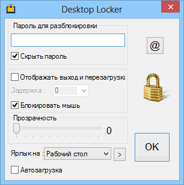
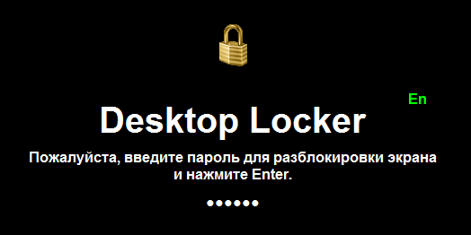

Desktop_Locker
Назначение
Блокировщик рабочего стола WinXP. Антивирусники на него ругаются по причине принудительного завершения системной программы диспетчера задач. Обычно так делают вирусы не давая убить себя. На Windows выше WinXP не работает, т.к. не блокирует диспетчер задач.


Desktop_Locker - утилитка для блокировки экрана.
Имеет несколько опций:
1. Разрешить отображение кнопок перезагрузки и выключения. Иногда полезно, если пароль не подходит, а выключать аварийно не хочется.
2. Возможность указать задержку появления на блокирующем экране кнопок перезагрузки и выключения. Например идёт выполнение операции, после которой появляется возможность выключить компьютер.
3. Заблокировать мышь. Эта опция не даёт возможность неопытным пользователям нажать кнопки перезагрузки и выключения (Tab переключает активность кнопок).
4. Установка прозрачности. Опция может пригодится, когда не скрываются данные и в тоже время предотвращается доступ к открытым документам.
5. Ярлык на рабочий стол (или меню программ или на панель быстрого запуска). Позволяет создать конфигурацию в зашифрованных данных, то есть не использовать окно настроек, а сразу блокировать с паролем, который был введён при создании ярлыка.
6. Автозагрузка. Нужно быть внимательным, потому что ошибочный пароль в виде опечатки может стать причиной полной блокировки системы. Эта опция создаёт аналог ярлыка, только в реестре (для текущего пользователя). При загрузке компьютер тут же блокируется.
Во всех случаях невозможно вызвать "Диспетчер задач" и отобразить панель задач.